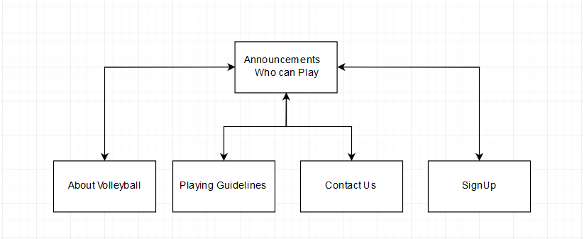

Goals The purpose of this website is to allow the Slammers Beach Volleyball to get on the internet, this will encourage a younger more tech savvy audience, as well as a wider audience and encourage more people to join the sport and begin to play, by allowing them to access information about the sport whenever they please.
Success Evaluation To evaluate if the website is successful an increase in participants for each week would be expected, furthermore the more people that sign up using the website can be another way to prove the websites success. The websites successfulness can also be measured by the website getting more hits but this way is not reliable because most people that come onto the website do not make any purchases, they are only there to browse, and also some of the visitors can be robots.
Target Audience The target audience of the website is a younger audience; this is ages between 15-30, although the current people attending are between ages 35-50. To cater for a younger audience, the use of clearly formatted pages and titles for each page and each paragraph.
Site Flowchart Site Flowchart

GitHub Repository Enter your repo name and edit the URL here. Make sure your GitHub repo is public.
https://github.com/QuintenEatsPlankton/BeachVolleyBall
Repo Name : QuintenEatsPlankton
(Made a mistake on the naming of my repository)